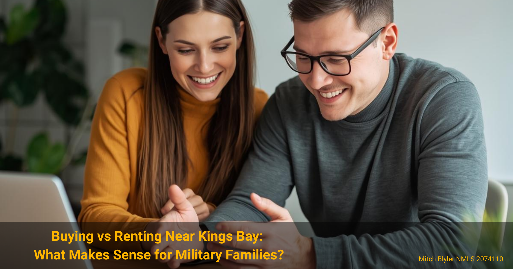

Housing Decisions for PCS Moves
Buying vs Renting Near Kings Bay: What Makes Sense for Military Families?
How service members stationed at Kings Bay can decide whether to buy a home or rent during their assignment.
Housing Decisions for PCS Moves
How service members stationed at Kings Bay can decide whether to buy a home or rent during their assignment.
When military families receive orders to Kings Bay Naval Submarine Base, one of the first financial decisions they face is whether buying or renting makes more sense.

A PCS move often brings a lot of decisions, and housing is one of the biggest. Service members moving to Kings Bay Naval Submarine Base frequently ask whether they should rent during their assignment or consider buying a home in Camden County.
The answer depends on your timeline, financial goals, and how you expect to use the home long term. Coastal Georgia has a unique housing market with relatively affordable home prices compared to many duty stations. That means many military families find that buying can cost about the same as renting—while building equity along the way.
Renting is the traditional choice for many military families during a PCS assignment. It offers flexibility, lower upfront commitment, and a simpler exit if new orders arrive. Around Kings Bay Naval Submarine Base, rental properties are common in nearby communities such as Kingsland and St. Marys, both within a short drive of the installation.
Typical rental prices in the area often range from roughly $1,600 to $2,000 per month depending on the size of the home and neighborhood. While that may fit comfortably within BAH for many service members, it's important to remember that rent payments do not build ownership or long-term financial value.
However, renting also means that every monthly payment goes entirely to the landlord. Over a typical three-year assignment, that can add up to tens of thousands of dollars without building any equity or ownership.
For service members stationed at Kings Bay, buying a home can be surprisingly practical. Camden County home prices are often lower than those near larger naval installations, which means a mortgage payment can sometimes fall in the same range as local rent.
Many buyers also take advantage of VA loan benefits, which allow qualified service members to purchase a home with no down payment and competitive interest rates. When structured correctly, a mortgage payment may be similar to rent while gradually building equity.
Military relocation patterns in Coastal Georgia often mean families stay at Kings Bay for multiple years. During that time, owning a home allows you to build equity, benefit from potential property appreciation, and potentially keep the home as a rental property if you receive new orders later. Some service members even keep the property as an investment while purchasing another home at their next duty station.
If you're relocating soon, this guide on VA loans during a PCS move explains how military buyers often coordinate a home purchase with their orders and relocation timeline.
One of the most useful ways to evaluate buying versus renting is by comparing monthly housing costs. In Camden County, single-family homes often sell at prices that make mortgage payments competitive with local rent.
For example, a home priced around the mid-$200,000 range could potentially have a monthly mortgage payment similar to a three-bedroom rental in Kingsland or St. Marys. While exact numbers depend on interest rates, taxes, insurance, and individual financial profiles, many buyers are surprised how close the monthly costs can be.
The key difference is where the money goes. Rent payments go entirely to a landlord, while mortgage payments build equity in a property you own. Over time, that equity can become a valuable financial asset. Some service members choose to keep their Kings Bay home as a rental when they PCS again, creating long-term passive income.
If future orders require another move, it's also possible in certain cases to qualify for two VA loans at the same time, depending on remaining entitlement and lender guidelines.
Buying a home during a military assignment tends to make the most sense when you expect to stay for several years and want to build long-term financial stability. Many families stationed at Kings Bay remain in the area for three to five years, which is often enough time for ownership to make financial sense.
Buying can also be attractive for families who prefer the stability of a permanent home environment rather than moving between rental properties. Homeownership allows you to choose the neighborhood, schools, and layout that work best for your family.
Additionally, the housing market around Kings Bay has historically benefited from consistent demand driven by military personnel, shipyard workers, and other defense-related employment in Coastal Georgia. That steady demand can help support property values over time.
If you're preparing for orders to the area, this guide to PCS moves to Kings Bay explains what many service members consider when planning their relocation and housing strategy.
The best option depends on your expected time at the duty station, financial goals, and comfort with homeownership. Renting offers flexibility, while buying can help build equity and potentially create long-term investment opportunities.
Many financial planners suggest planning to stay at least two to three years before buying. That timeframe allows you to spread closing costs over a longer period and benefit from potential home value appreciation.
In some situations, yes. Because VA loans allow qualified service members to buy with no down payment and competitive interest rates, monthly mortgage payments can sometimes be comparable to rent in the same area.
Many military homeowners choose to rent out the property after receiving new orders. Others sell the home or keep it as a long-term investment depending on their financial goals and local housing market conditions.

If you're considering buying a home near Kings Bay, a quick conversation can help you understand your options.
Download the Free VA Loan Guide →
Loan programs, eligibility requirements, interest rates, and closing costs vary based on individual circumstances, credit profile, property type, and market conditions. Every mortgage scenario should be reviewed on a case-by-case basis to determine the most appropriate structure.